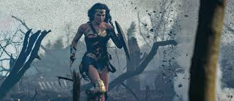

Em Themyscira, o reino das Amazonas, Diana Prince, a Mulher-Maravilha, é chamada para uma missão crítica. Um artefato antigo e poderoso, o "Coração de Gaia", foi roubado e está ameaçando desestabilizar o equilíbrio entre o mundo humano e o mundo místico.
Diana descobre que o artefato está sendo leiloado no submundo de uma grande metrópole. Esse artefato tem o poder de controlar a natureza e as forças elementares, e em mãos erradas, pode causar uma devastação sem precedentes.
Diana decide permanecer em Themyscira. Embora a paz pareça estar restaurada, o perigo do artefato continua a ameaçar o equilíbrio entre os mundos. O tempo pode ser um aliado ou um inimigo.
Na busca pelo artefato, Diana se infiltra no submundo da metrópole e descobre uma organização secreta que deseja usar o Coração de Gaia para abrir um portal para uma dimensão caótica e liberar criaturas destrutivas sobre o mundo.
Diana decide abandonar a missão e retornar a Themyscira. O artefato continua fora de alcance e a ameaça da organização secreta permanece iminente.
De volta a Themyscira, Diana se prepara para enfrentar a organização secreta. Ela reúne aliados poderosos e elabora uma estratégia para impedir que o Coração de Gaia caia nas mãos erradas e para proteger o mundo da ameaça iminente.
Diana e seus aliados invadem o esconderijo da organização secreta. Eles enfrentam uma série de desafios e inimigos, incluindo um feiticeiro sombrio que lidera o grupo e possui habilidades mágicas poderosas.
Diana confronta o feiticeiro e seus seguidores em uma batalha épica. Apesar da vitória, ela descobre que o Coração de Gaia foi levado para um local desconhecido por um novo e mais perigoso inimigo.
Diana decide voltar para Themyscira e a missão termina sem resolução definitiva. A busca pelo artefato continua e a ameaça persiste.
Após a batalha, Diana continua sua busca pelo Coração de Gaia. Embora tenha conseguido impedir que o feiticeiro o usasse, a verdadeira ameaça permanece. O destino do artefato e a segurança do mundo estão em jogo.
